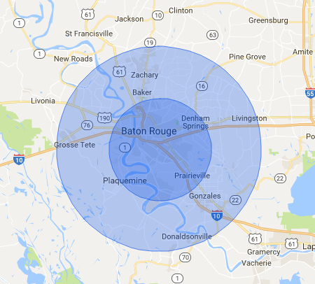

Tigerwood is a Baton Rouge based firewood delivery service that supplies firewood to anyone who needs it.
We offer Oak wood that is seasoned to perfection.
We only have and deliver Oak
You may request a delivery date, give us a call and we will do our best to work with you.
Delivery times vary but they are usually 2 to 4 days from order. During some peak times (cold spells, holidays, etc.) delivery times may be as long as 1 to 2 weeks. We are unable to deliver a newly placed order ahead of those that have been waiting.
All deliveries in the inner circle are free. Deliveries in the outside radius will be charged an additional fee.

Our standard firewood is cut at 15 to 18 inches. That is the industry standard length so volumes can be measured consistently & each piece fits correctly in stoves and on firewood racks.
Oak
A cord is the only legal measurement of firewood. It is a volume measuring a total of 128 cu ft when stacked loosely. It is generally defined as a “loosely stacked pile of firewood that is 4′ high x 4′ wide x 8′ long”. Woodchuck Delivery sells a cord by face measurements, for instance a quarter cords measures 4′ high by 4′ wide plus the width of the wood, a half cord measures 4′ high by 8′ wide plus the width of the wood, and a full cord measures 4′ high by 16′ wide plus the width of the wood. Our wood is cut 15″-18″ unless custom ordered.